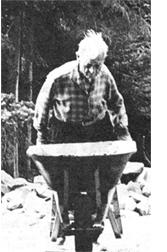
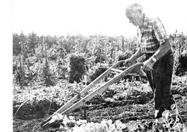
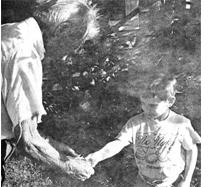

A few years ago, when Maine's Commission on the Arts and Humanities cited Scott Nearing for "making an art of his life," Governor Kenneth M. Curtis wrote: "Scott Nearing has lived in Maine since 1952 on a saltwater farm that looks out upon Penobscot Bay, a farm that he and his like-minded wife, Helen, have returned, by bread labor, to bountiful production. There the doors are open to hundreds of people of all ages who come each year to learn the secrets of living off the land, and yet, within that rigorous discipline, [Scott has found] the energy and leisure for writing, for music, for civic affairs. Long before many of us were born, this man was doing battle. He spoke out against child labor, against war; he predicted the decay of great cities, the pollution of air and waters, the decline of personal independence. Economist, environmentalist, sociologist, lecturer and writer, he prescribed the Good Life and practiced what he preached."
In spreading his "gospel," Scott has written literally dozens of books - and though his subject matter has ranged from making maple sugar to the past, present and future of civilization, the constant theme of both his writings and his daily existence has been the crying need for a better way of life for all humanity.
In Living the Good Life and Continuing the Good Life, Helen and Scott told how they managed - on a personal level - "to live safely and sanely in a troubled world." But it's from Man's Search for the Good Life, a book Scott wrote in 1954 and dedicated "to all who envision and seek a better future," that we offer the following glimpses of the vision that has guided this very good man.
Man may press back the natural forces, may shield himself against them, may modify them to a degree, may seek permanent escape from their pressures. There is the possibility of postponement, but no real avoidance. Man may upset the nature-balance. Nature's response is a tireless and ceaseless effort to reestablish the balance.
Nature is as inexorable as fire, as persistent as water, as merciless as frost, as implacable as sunshine, as penetrating as wind, as tireless as the proliferating grasses of the prairies, the trees of the forest, the bacteria of the soil, and the myriads of living creatures which swarm on the earth, in the waters and the air. Nature is all these things. Let man the seeker turn where he will, in his deepest burrowings, his fastest flights, his moments of most complete self-absorption, he is still in the arms of mother nature, and subject to her all-pervasive forces and powers.
The year 1910 was the last year when no war went on anywhere in the world. Since 1910, decade by decade, war preparations and military operations, conventional and undeclared, have been woven into the warp and woof of civilized life. Those of us who were born before 1910 had an opportunity to compare peacetime life with life under conditions of declared and undeclared war. Those born since 1910 can make no such comparison. They were born into a human society divided and confused by double-think and double-talk. A community in which the makers and shapers of public opinion talked life, liberty and happiness and practiced death, conscription and monotonous, desperate misery.
Conflict breeds conflict. One war leads into another. Victory brings not peace, but intensified military preparedness. Thus step by step the life of the militarized community is concentrated on destruction rather than production. War disrupts and bankrupts financially, economically, socially, morally. Of the civilizations known to history, Toynbee notes, all twenty have been crippled or destroyed, and in every case the proximate cause of the disaster has been war. The forces implicit in a competitive, acquisitive, expansive community lead to war as inexorably as water runs down hill. The same pattern appears in every one of the civilizations of which history has a record. Toynbee's conclusion is sinister - "militarism is suicidal." Hence, the formula: civilization equals social suicide.
Taken at its best, the exchange of labor-time for goods and services restricts and limits the wage and salary worker to a life of routine which is lacking in interest and devoid of essential purpose.
Most city dwellers enter the treadmill voluntarily, lock the door after them, and toss the key into the trash basket - lightheartedly assuming that all will be well. If they come to themselves and decide to escape from the city, it is usually too late. They have given too many hostages, made too many commitments, become entangled in too many alliances. No longer are they free to go. They must stay and take the consequences. Thus the individual is caught and held in the web of urbanism.
Depression is one of the prices which the West has been paying for the growing volume of its comforts and conveniences. Through the years the depressions have extended in area and increased in intensity, become less and less periodic and more nearly chronic.
Comforts, conveniences, depression and war were four children of the same parent - the western way of life with its "highest standard of living on earth."
Western man had found the sources of abundance. He had built his "highest standard of living" for himself, if not for others. But he had gained neither happiness nor blessedness. On the contrary, the aggressive, cynical, ruthless, unjust means which he had employed in erecting his Standard of Living tower, had brought a terrible harvest of economic breakdown, political upheaval, destruction and death. Evidently it is not enough to build. To endure, the social structure must embody order, justice and harmony as well as productive efficiency.
Our analysis of civilization leads to an inescapable conclusion: The pattern of social life which is how being followed in the West is economically inefficient and self-defeating, socially corrosive and disruptive, and morally indefensible. By no stretch of the imagination could anyone suppose that its end product will be a good life.
If, as we have been assuming in this discussion, western civilization is dying, we must treat the event as we treat the death process elsewhere. That is, we must separate ourselves, psychologically, from the old ("The king is dead.") and dedicate ourselves enthusiastically to the new ("Long live the king.").
Life is not only eternal in the sense of duration. It is also becoming, in the sense of unfolding like an opening flower.
To say one thing and to do another keeps a human being divided against himself. Seekers after the good life are perfectionists, satisfied with nothing less than the best. Besides being perfectionists, they are whole-ists, aiming at that integration of the thought, the word and the deed which is the expression of wisdom and the basis of serenity and inner peace.
Those who decide what is right and determine to live accordingly have decreased their dependence on the folkways, placed habit in a position of secondary importance, and have sent conscience and reason into the front lines of the life struggle. Henceforth, acting in terms ofself-assumed obligations and duties, they have entered upon a supreme adventure choosing and following an intentional good life.
Do comfort, convenience and security give zest or savor to life? They surely make life easy, but there are folks a-plenty who get up before they are called, work harder and longer than they have to, and go poking their noses into shadowy corners which are not their concern, all because they are bursting with energy, imagination, curiosity, visions, schemes, designs, ambitions, fears and hopes which take them out of themselves, make them throw comfort, convenience and security to the winds, launch out on unknown seas, and enter upon the most improbable and impossible enterprises.
Comfort, conveniences and security are the objects of life only for the inert and the indifferent. The alert, the energetic and the venturesome want to live, to test and mature their powers. Through their restlessness they upset the apple-cart of conformity and start off on some new project, in some new direction. They want change.
The time is not far distant - it may have already arrived - when men must disarm or perish. There is no more imperative challenge facing this generation than that of substituting negotiation and accepted nonviolent social procedures for the destructivity of armed force. No frontier offers greater opportunity for effective pioneering.
Sooner or later social scientists and social engineers will develop a technique that will make it possible, by orderly procedure, to modify or eliminate an outmoded social apparatus in the same way that a modern community eliminates a fire, health or safety hazard embodied in an outmoded building. Here is another frontier, another place where the would-be pioneer may test his powers, serve his fellows and put the future in his debt.
It is sometimes easier to guide an ocean liner through the winter tempests which torment the Atlantic than to pilot an individual life successfully through the vicissitudes of an ordinary week. Yet each human being has one primary assignment: to rule himself. Failure here means something less than success in living the good life.
Living with fellow men presents a second challenge to the individual. Even though he may make a perfect score in the difficult task of self rule, to live the good life he must live successfully with his fellow humans.
Rules for successful social living are simple and easily followed. They are three in number: 1. All human beings are members of one family - the human family. They are cousins under the skin. Treat them accordingly. 2. Associate with fellow humans in terms of mutual aid on the principle of live and help live. Give as much as you can in the way which you believe will help the most. Neither ask nor expect a return. Whatever happens, continue to give and share, up to the point of yielding life itself. 3. Throughout the many ramifications of human association, let one simple formula prevail: From each according to his abilities, to each according to his needs. The responsibility and duty to give freely of one's best is the overshadowing factor in all successful human relations.
Human beings are not alone on the earth. On every side they are surrounded by uncounted numbers belonging to multitudes of genera, families and species of microscopic entities, of lichens and fungi, of vegetation, insects, birds, fish, animals. Each group of these beings is a specialized, particular manifestation of the life-impulse … There the same formula applies which we have stated as a guide for human association - live and help live. Wherever you come into contact with any aspect of life, do your utmost to encourage it, to enhance it, to broaden it, to complete it. If in the course of your life it becomes necessary to destroy other life forms, do so regretfully, economically, following the principle of the least harm to the least number and the greatest advantage to the greatest number … [Man's] role is that of preserver, friend, mentor, big brother. Wherever he goes he must leave behind him more abundant life.
An adult human being must study himself, understand himself as far as may be, rule over his slothful body, his rebellious passions, his errant mind, and keep those various and often conflicting elements moving toward his chosen goals, in a manner that will preserve his self-respect, and in the course of his experience, enhance his capacity for self-control and self direction, without detracting from his conscious, useful functioning as a member of the various subgroups and the human family totality to which he belongs. This is a major assignment. Each individual human being is composed of the fragments and the forces which make up the universe. He who would direct the stars in their courses must begin his training for this vast enterprise by directing the same forces as they appear minutely in his own being.
These are hard sayings, not easy to accept in theory and far more difficult to follow in practice. Yet man cannot hope to live a good life until he has learned to play his part with the universe as he plays his part with himself, with his fellow men, and his fellow creatures … One must live in and of the universe, as a glad, responsible participant in a magnificent enterprise.
|
 RICHARD GARRETT Scott Nearing on his farm overlooking Penobscot Bay, Maine. |
 RICHARD GARRETT "Economist, environmentalist, sociologist, lecturer and writer, Scott Nearing prescribed the Good Life and practived what he preached." -Maine Governor Kenneth M. Curtis. |
 RICHARD GARRETT "[Man's] role is that of preserver, friend, mentor, big brother. Wherever he goes he must leave behind him more abundant life." -Scott Nearing |